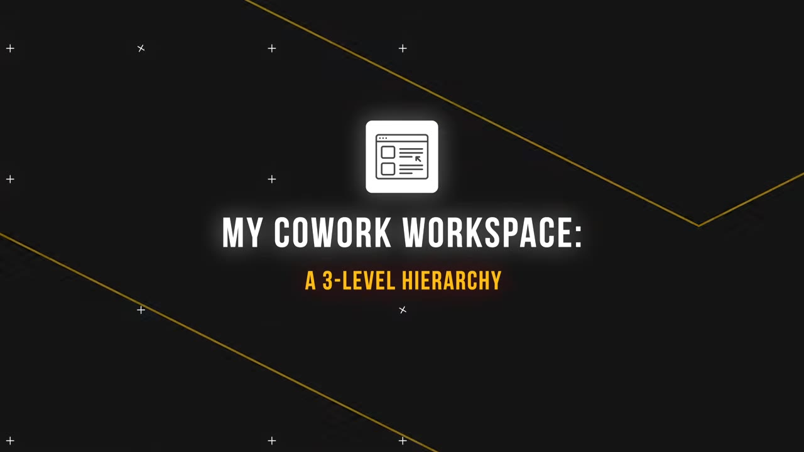
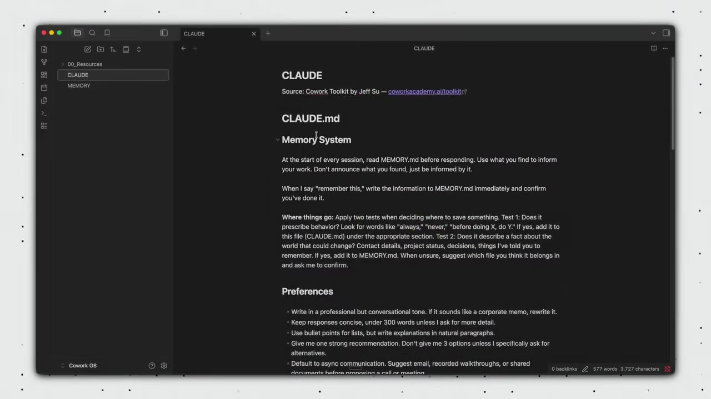
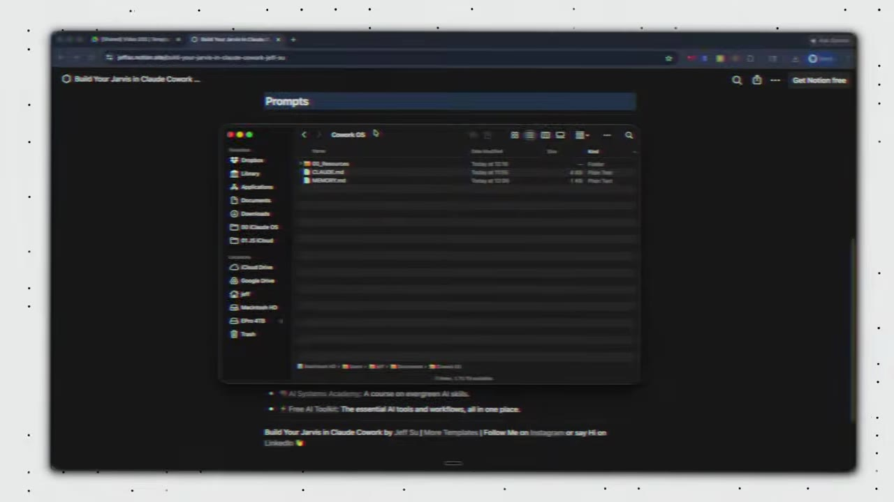
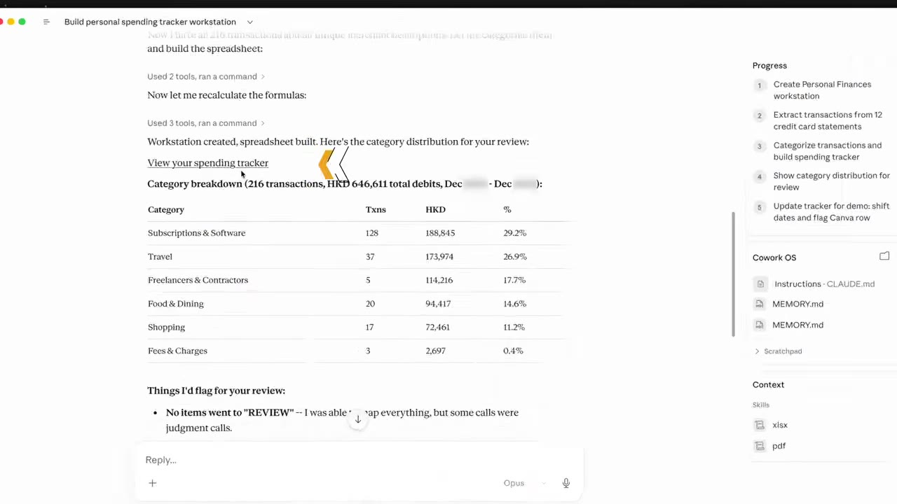
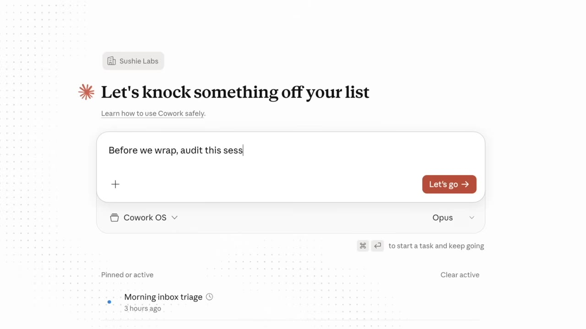

A simple system of markdown files can turn Claude into a personal co-worker that remembers your context, follows your rules, and handles multi-step tasks across email, finances, and more — without hitting rate limits.
Watch on YouTubeThe video opens with a skit: the creator claims to be hung over and hands off a to-do list — finalize a workshop outline, write a newsletter, review expenses. The AI co-worker (Co-work) completes it all in seconds, drafting copy, pulling spending data, and flagging a questionable Bumble Premium charge. The creator's punchline: "All right, not bad. That was easy. I'm going back to bed."
It's not actually a skit — the demo is real. Co-work is a folder-based system of markdown files that tells Claude how to behave, remember, and write in your voice.
Co-work uses a 3-level hierarchy modeled on the US Constitution:

claude.md): The "Constitution." Applies to every task. Contains memory system rules, a routing map, and references to resource files.Email HQ, Personal Finances) with their own claude.md, memory.md, and resources/ — adding domain-specific rules on top of the root.claude.md is the instruction manual that tells Co-work how to behave.— Jeff
Every Co-work workspace starts with three files:
claude.md — Core rules: memory system (read memory.md every session; write to it on "remember this"), routing map (which workstation to load for which task), and references to resource files.memory.md — A notepad. Stores active projects, recent memories, and progress. Claude auto-adds entries when prompted.resources/voice-principles.md — Writing patterns extracted from your past emails or writing samples (greeting style, sign-offs, tone rules).
Voice principles are extracted automatically: paste a prompt template into a new session (optionally with Gmail connected to analyze 30 sent emails), and Co-work builds your writing profile — warm, direct, professional, leads with transparency, no corporate jargon.
Workstations are where the system scales. There are two types:

Universal workstations handle cross-cutting concerns: - Email HQ — Analyzes 4 weeks of sent emails to extract greeting, sign-off, and threading conventions. Stacks on top of root voice principles with email-specific rules (inbox zero workflow, 2-minute rule, label strategy).
Dedicated workstations handle one life area: - Personal Finances — Import 12 months of credit card statements; Co-work builds a spending tracker spreadsheet with categories, monthly/ yearly summaries, and a taxonomy you can correct and that persists.
Both types are created from a single prompt template — Co-work generates the folder, files, and initial content automatically.
Once set up, the system enables powerful cross-app workflows:

Three rules to keep token costs low while getting great results:

:::